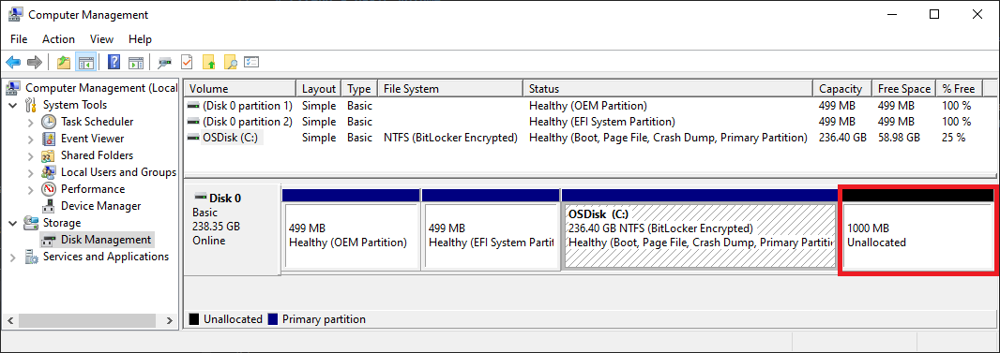
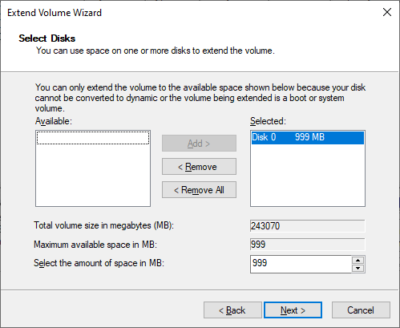

Partitionnement et préparation des disques
Comprendre le partitionnement d’un disque, distinguer les principales structures de partition, préparer un support de stockage et effectuer les vérifications nécessaires avant l’installation d’un système d’exploitation.
1. Qu’est-ce que le partitionnement d’un disque ?
Définition
Le partitionnement consiste à diviser logiquement l’espace disponible d’un support de stockage en une ou plusieurs zones appelées partitions. Chaque partition peut ensuite être utilisée pour stocker des données, accueillir un système d’exploitation ou remplir une fonction particulière.
Le partitionnement ne découpe pas physiquement le disque. Il crée une organisation logique permettant au système de savoir où commencent et où se terminent les différentes zones du support.
Exemple
Un SSD de 1 To peut être organisé avec une partition destinée au système d’exploitation et une autre destinée aux données. Pour l’utilisateur, ces espaces peuvent apparaître comme des unités distinctes alors qu’ils se trouvent sur le même support physique.
2. Pourquoi partitionner un disque ?
Le partitionnement permet d’organiser l’espace de stockage en fonction des besoins du système et de l’utilisateur. Il intervient notamment lors de l’installation d’un système d’exploitation.
| Besoin | Rôle du partitionnement |
|---|---|
| Installer un système | Préparer l’espace dans lequel les fichiers du système seront installés. |
| Organiser les données | Séparer logiquement certains ensembles de fichiers. |
| Utiliser plusieurs systèmes | Réserver des espaces distincts lorsque plusieurs systèmes doivent coexister. |
| Maintenance | Faciliter certaines opérations de réinstallation, sauvegarde ou récupération lorsque l’organisation a été planifiée à l’avance. |
3. Disque physique, partition et volume
Ces trois notions sont liées mais ne désignent pas exactement la même chose.
| Notion | Définition | Exemple |
|---|---|---|
| Disque physique | Support matériel de stockage, par exemple un SSD ou un HDD. | Un SSD interne de 500 Go. |
| Partition | Zone logique définie dans l’espace d’un disque. | Une partition de 200 Go sur le SSD. |
| Volume | Espace de stockage logique que le système peut préparer et utiliser pour enregistrer des données. | Un volume formaté en NTFS et monté comme unité C: sous Windows. |
4. Table de partition : MBR et GPT
Définition
Une table de partition décrit l’organisation des partitions présentes sur un disque. Deux schémas sont couramment rencontrés : MBR et GPT.
| Caractéristique | MBR | GPT |
|---|---|---|
| Signification | Master Boot Record | GUID Partition Table |
| Contexte | Schéma historique, associé à de nombreux systèmes plus anciens. | Schéma moderne couramment associé aux systèmes utilisant UEFI. |
| Capacité | Présente des limitations historiques, notamment pour les très grands disques. | Conçu pour gérer des disques de grande capacité. |
| Nombre de partitions | Organisation plus restrictive. | Permet davantage de partitions sans recourir au même mécanisme de partition étendue. |
| Fiabilité de la structure | Informations essentielles concentrées dans la structure MBR. | Utilise des informations de partitionnement redondantes et des mécanismes de vérification. |
Sur un ordinateur moderne utilisant UEFI, GPT est généralement le schéma attendu. La relation entre BIOS, UEFI et le démarrage sera approfondie dans la leçon consacrée au firmware et au processus de démarrage.
5. Formatage et systèmes de fichiers
Définition du formatage
Le formatage prépare un volume afin qu’un système puisse y organiser et y enregistrer des fichiers. Il met en place un système de fichiers.
Système de fichiers
Un système de fichiers définit la manière dont les fichiers et dossiers sont organisés, nommés, localisés et gérés sur un volume.
| Système de fichiers | Utilisation générale |
|---|---|
| NTFS | Très utilisé par Windows pour les volumes système et les volumes de données. |
| FAT32 | Ancien format bénéficiant d’une large compatibilité; encore rencontré sur certains supports et partitions techniques. |
| exFAT | Souvent utilisé pour des supports amovibles nécessitant une bonne interopérabilité entre plusieurs systèmes. |
| ext4 | Système de fichiers couramment utilisé dans les distributions Linux. |
6. Partitions utilisées lors d’une installation moderne
Lors d’une installation, toutes les partitions n’ont pas nécessairement le même rôle. Certaines accueillent les fichiers du système, tandis que d’autres sont utilisées pour le démarrage ou la récupération.
| Type ou rôle | Fonction générale |
|---|---|
| Partition système | Contient les éléments nécessaires au fonctionnement ou au démarrage du système selon l’architecture utilisée. |
| Partition EFI (ESP) | Partition utilisée dans un environnement UEFI pour stocker des fichiers nécessaires au démarrage. |
| Partition principale du système | Accueille le système d’exploitation, les applications et une partie des données. |
| Partition de récupération | Peut contenir des outils permettant d’effectuer des opérations de réparation ou de récupération. |
Lorsqu’un installateur crée automatiquement certaines partitions techniques, il est important de comprendre leur fonction avant de les supprimer ou de les modifier.
7. Préparer un disque avant l’installation
La préparation d’un disque doit être planifiée avant de commencer l’installation. L’objectif est d’éviter la perte de données et de s’assurer que l’organisation du stockage correspond au système que l’on souhaite installer.
- Identifier le disque cible. Vérifier sa capacité, son type et sa position dans la machine.
- Vérifier les données existantes. Déterminer si le disque contient des fichiers ou un système à conserver.
- Effectuer une sauvegarde. Copier les données importantes sur un autre support.
- Vérifier le mode de démarrage. Identifier le contexte BIOS/UEFI et le schéma de partition approprié.
- Planifier les partitions. Déterminer leur rôle et l’espace nécessaire.
- Créer, supprimer ou redimensionner avec prudence. Toute modification doit correspondre au plan établi.
- Choisir le système de fichiers approprié. Le choix dépend du système d’exploitation et de l’utilisation du volume.
- Vérifier avant de lancer l’installation. Confirmer une dernière fois que le bon disque et les bonnes partitions sont sélectionnés.
8. Manipulation guidée sous Windows : Gestion des disques
Accès à l’outil
Gestion des disques est un outil graphique de Windows permettant d’observer les disques et volumes et d’effectuer certaines opérations de gestion du stockage.
- Ouvrez le menu d’accès rapide de Windows et lancez Gestion des disques.
- Repérez les disques physiques affichés : Disque 0, Disque 1, etc.
- Observez les volumes, leur capacité, leur système de fichiers et leur état.
- Identifiez l’espace éventuellement indiqué comme non alloué.
- Avant toute modification, vérifiez deux fois le numéro et la capacité du disque concerné.
Opérations courantes
Selon l’état du disque, l’outil peut permettre notamment de créer un nouveau volume, réduire ou étendre certains volumes, attribuer une lettre de lecteur et effectuer un formatage.
9. Espace non alloué, création et redimensionnement
Espace non alloué
Un espace non alloué est une zone du disque qui n’appartient actuellement à aucune partition utilisable. Cet espace peut servir à créer une nouvelle partition ou, lorsque les conditions le permettent, à agrandir un volume existant.
Réduction d’un volume
Réduire un volume consiste à diminuer sa taille logique afin de libérer une partie de l’espace. L’espace libéré peut ensuite apparaître comme non alloué.
Extension d’un volume
Étendre un volume consiste à lui attribuer davantage d’espace disponible lorsque la configuration du disque et l’outil utilisé permettent cette opération.
Étape 1 — Repérer l’espace non alloué
Dans Gestion des disques, repérez d’abord le volume que vous souhaitez agrandir et l’espace indiqué comme Non alloué. Dans l’exemple ci-dessous, le disque 0 contient le volume OSDisk (C:) et un espace de 1000 Mo non alloué situé immédiatement à sa droite.

Étape 2 — Choisir l’espace à ajouter
Après avoir lancé la commande d’extension du volume, l’Assistant Extension du volume affiche l’espace disponible. L’utilisateur peut alors vérifier le disque sélectionné et préciser la quantité d’espace, exprimée en mégaoctets (Mo), à ajouter au volume.

Étape 3 — Vérifier avant de continuer
Dans la capture, le champ Maximum available space in MB indique 999 Mo et la même valeur est sélectionnée dans Select the amount of space in MB. Cela signifie que l’assistant prévoit d’utiliser la totalité de l’espace disponible affiché pour agrandir le volume.
10. Préparation d’un disque pour Windows et Linux
Les installateurs modernes peuvent automatiser une partie du partitionnement, mais l’administrateur doit comprendre ce qui sera créé et vérifier que le disque choisi est correct.
Installation de Windows
Dans un environnement moderne UEFI, une installation Windows utilise généralement GPT et peut créer automatiquement plusieurs partitions nécessaires au démarrage, au système et à la récupération.
Installation de Linux
Une distribution Linux peut également effectuer un partitionnement automatique. En mode manuel, l’administrateur peut être amené à définir les volumes et leurs points d’utilisation. La structure exacte dépend de la distribution, du mode d’installation et des besoins.
11. Vérifications avant validation
Avant de confirmer une opération de partitionnement ou de formatage, une vérification méthodique réduit le risque d’erreur.
| Vérification | Question à poser |
|---|---|
| Disque cible | Ai-je sélectionné le bon disque physique ? |
| Données | Les données importantes ont-elles été sauvegardées ? |
| Schéma | MBR ou GPT correspond-il au contexte prévu ? |
| Partitions | Le rôle et la taille des partitions sont-ils cohérents avec l’installation ? |
| Système de fichiers | Le format choisi est-il adapté au système et à l’usage ? |
| Démarrage | La configuration est-elle cohérente avec le mode de démarrage utilisé ? |
12. Erreurs fréquentes et bonnes pratiques
| Erreur | Conséquence possible | Bonne pratique |
|---|---|---|
| Choisir le mauvais disque | Suppression ou modification de données qui devaient être conservées. | Identifier le disque par son numéro, sa capacité et son contenu avant toute action. |
| Formater sans sauvegarde | Perte d’accès aux données importantes. | Sauvegarder avant toute opération destructive. |
| Confondre partition et système de fichiers | Mauvaise planification du stockage. | Distinguer la division logique du disque de l’organisation des fichiers. |
| Modifier une partition technique sans connaître son rôle | Problèmes de démarrage ou de récupération. | Identifier la fonction de chaque partition avant de la modifier. |
| Ignorer le contexte BIOS/UEFI | Configuration incohérente avec le mode de démarrage prévu. | Vérifier le firmware et le schéma de partition avant l’installation. |
Mise en situation — Préparer un SSD pour une nouvelle installation
Vous devez préparer un SSD de 1 To pour installer un système d’exploitation. Le disque contient actuellement une ancienne installation et des fichiers personnels que l’utilisateur souhaite conserver.
- Quelles informations devez-vous recueillir avant toute modification ?
- Quelle opération doit être réalisée avant de supprimer ou formater une partition ?
- Comment vérifiez-vous que vous travaillez sur le bon disque ?
- Quels éléments influencent le choix entre MBR et GPT ?
- À quel moment choisissez-vous le système de fichiers ?
- Quelles vérifications effectuez-vous juste avant de valider l’installation ?
Activité de synthèse
À partir d’un disque fictif de 1 To, proposez un plan de préparation pour une nouvelle installation. Votre travail doit contenir :
- l’identification du disque et des données à conserver;
- le choix raisonné du schéma MBR ou GPT;
- un schéma simple représentant les partitions prévues;
- le système de fichiers prévu pour les volumes concernés;
- les étapes de sauvegarde et de vérification;
- les risques associés aux opérations proposées.
Quiz — Partitionnement et préparation des disques
Vérifiez votre compréhension des notions essentielles de la leçon. Sélectionnez une réponse par question, puis cliquez sur Corriger le quiz.
1. Quelle définition décrit le mieux une partition ?
2. Sur un ordinateur moderne utilisant UEFI, quel schéma de partition est généralement attendu ?
3. Quelle est la fonction principale du formatage d’un volume ?
4. À quoi sert principalement une partition EFI (ESP) dans un environnement UEFI ?
5. Dans Gestion des disques, que représente un espace « non alloué » ?
6. Un SSD de 500 Go contient un seul volume occupant presque tout le disque. Vous voulez créer une seconde partition sans supprimer le premier volume. Quelle opération faut-il envisager d’abord ?
7. Quelle précaution doit être prise avant une opération susceptible de modifier ou supprimer des partitions contenant des données importantes ?